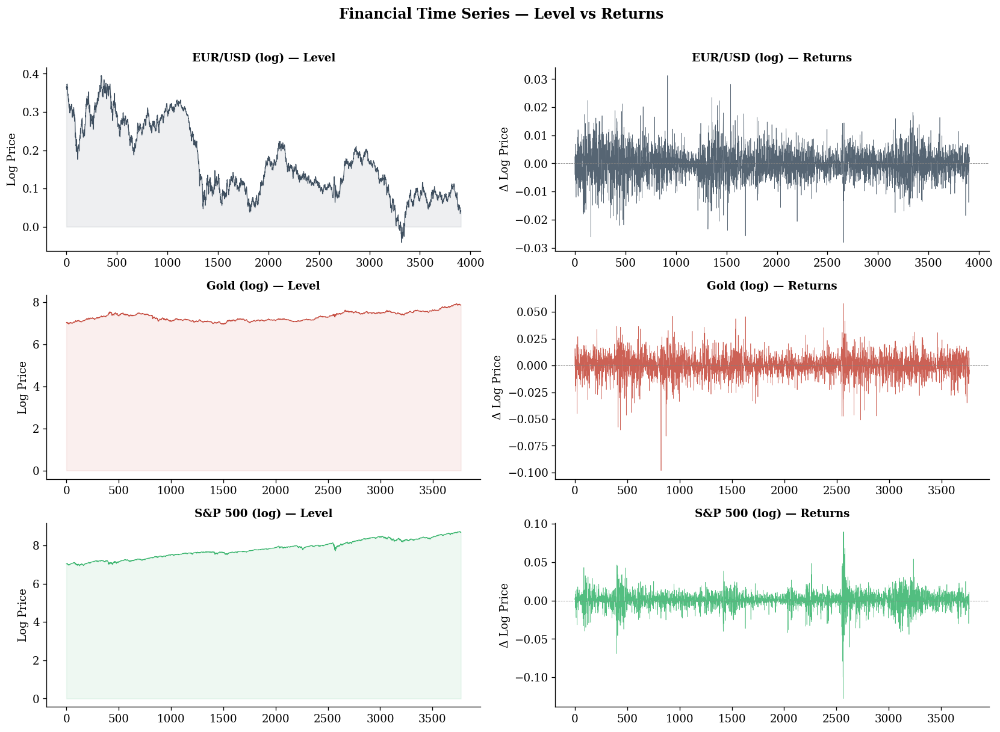
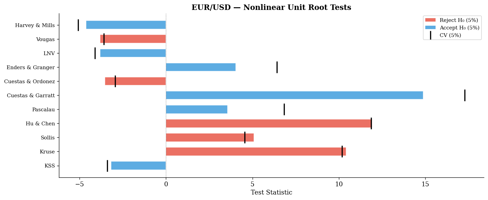
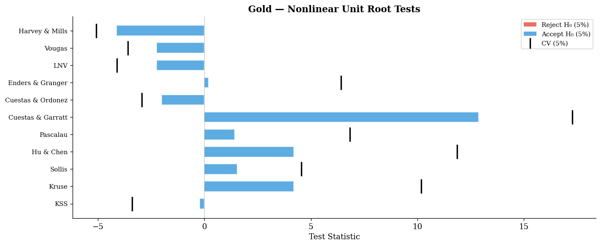
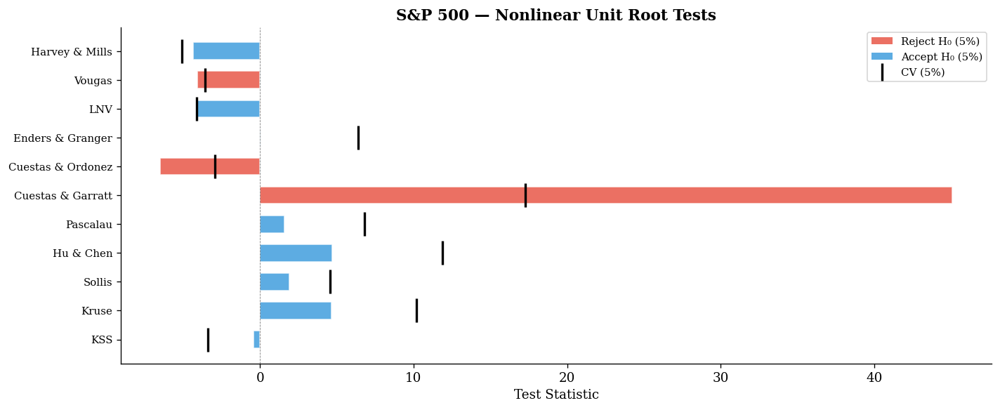
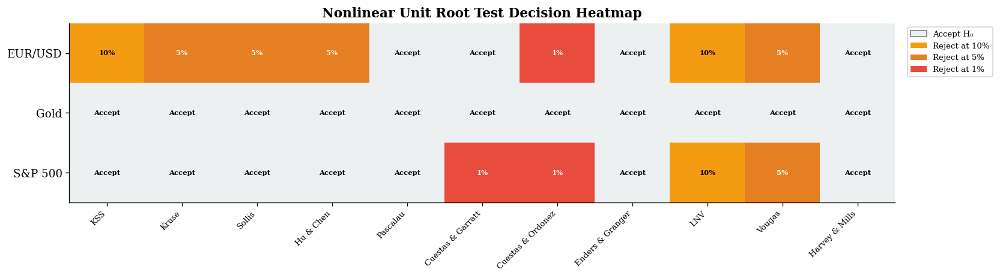
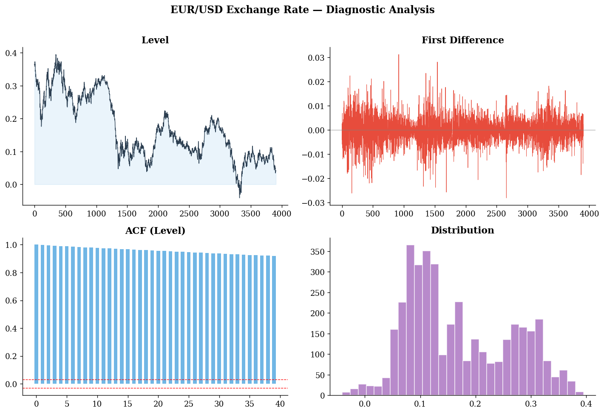
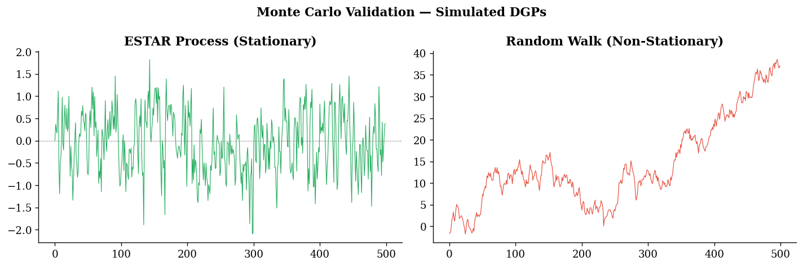

🧪 Open Source · MIT License · v1.0.1
TARUR
A high-performance Python library for nonlinear unit root testing — 17+ tests, embedded critical values from original papers, automatic reject/accept decisions, and publication-quality output.


A high-performance Python library for nonlinear unit root testing — 17+ tests, embedded critical values from original papers, automatic reject/accept decisions, and publication-quality output.
Researchers applying nonlinear unit root tests face a recurring frustration: existing implementations in R (e.g., NonlinearTSA) do not provide critical values, forcing manual lookups in the original papers for every test. TARUR eliminates this entirely.
Every test uses its own CVs from the original paper (asymptotic + finite-sample). Automatic linear interpolation for intermediate sample sizes.
Reject / fail-to-reject at 1%, 5%, and 10% — with a plain-English interpretation sentence — printed automatically for every test.
Corrects known errors in NonlinearTSA: Kruse's modified Wald τ, Hu-Chen's 3-parameter statistic, Sollis (2009) auxiliary regression.
tarur.run_all_tests(y) runs every available test at once and produces a unified comparison table — ideal for papers.
Call batch.to_latex() to get a ready-to-paste LaTeX table for your journal submission — no manual formatting.
Built-in diagnostic dashboards, test statistic comparison charts, and decision heatmaps via batch.plot().
TARUR requires only the standard scientific Python stack. No R, no compiled extensions.
# Install the latest stable release pip install tarur==1.0.1 # Or always get the newest version pip install tarur
git clone https://github.com/merwanroudane/tarur.git cd tarur pip install -e .
import numpy as np import tarur # Your time series (log-levels for financial data) y = np.log(your_price_series) # ── Single test ──────────────────────────────────────── result = tarur.kss_test(y, case='demeaned', max_lags=12) print(result) # → Prints statistic, CVs, decision, interpretation # ── Full battery (17 tests at once) ──────────────────── batch = tarur.run_all_tests(y, case='demeaned', max_lags=12) print(batch) # Formatted table batch.plot() # Dashboard print(batch.to_latex()) # LaTeX for your paper
All 17+ tests with their statistic type, critical value source, and rejection tail. Click the function name to see usage.
| Test | Function | Statistic | Tail | Key Feature |
|---|---|---|---|---|
| KSS (2003) | kss_test() | tNL | Left | Foundational ESTAR — cubic auxiliary regression |
| Kruse (2011) | kruse_test() | Modified Wald τ | Right | Nonzero location c — corrects R bug |
| Sollis (2009) | sollis2009_test() | F_AE + Fas | Right | Asymmetric ESTAR + symmetry test |
| Hu & Chen (2016) | hu_chen_test() | 3-param τ | Right | Locally explosive, globally stationary |
| Test | Function | Statistic | Tail | Key Feature |
|---|---|---|---|---|
| LNV (1998) | lnv_test() | t_ADF | Left | Single logistic transition — Models A, B, C |
| Vougas (2006) | vougas_test() | t_ADF | Left | 5 functional forms — Models A–E |
| Harvey & Mills (2002) | harvey_mills_test() | t_ADF | Left | Double smooth transition — two structural breaks |
| Test | Function | Statistic | Tail | Key Feature |
|---|---|---|---|---|
| Enders & Granger (1998) | enders_granger_test() | Φ | Right | MTAR with momentum indicator Iₜ |
| Sollis (2004) | sollis2004_test() | F_TAR | Right | ST-TAR with logistic detrending |
| Cook & Vougas (2009) | cook_vougas_test() | F_MTAR | Right | ST-MTAR — own CV table (not Sollis) |
| Test | Function | Statistic | Tail | Key Feature |
|---|---|---|---|---|
| Kılıç (2011) | kilic_test() | inf-t | Left | Grid search over γ — higher power |
| Park & Shintani (2016) | park_shintani_test() | inf-t | Left | Transitional autoregressive model |
| Pascalau (2007) | pascalau_test() | F | Right | Asymmetric NLSTAR with y⁴ |
| Cuestas & Garratt (2011) | cuestas_garratt_test() | χ² | Right | Cubic polynomial detrending |
| Cuestas & Ordóñez (2014) | cuestas_ordonez_test() | tNL | Left | NLS logistic detrending + KSS |
| Test | Function | Description |
|---|---|---|
| KSS Cointegration (2006) | kss_cointegration_test(y1, y2) | Nonlinear cointegration via ESTAR residuals |
| Enders & Siklos (2001) | enders_siklos_test(y1, y2) | Threshold cointegration with asymmetric ECM |
| Teräsvirta (1994) | terasvirta_test() | Linearity test + LSTAR vs ESTAR selection |
| ARCH (Engle 1982) | arch_test() | LM test for conditional heteroscedasticity |
| McLeod-Li | mcleod_li_test() | Portmanteau test on squared residuals |
All plots generated by the tutorial notebook using real EUR/USD, Gold, and S&P 500 data (2010–2024).







Follow this four-step protocol for a rigorous empirical application.
import numpy as np import tarur # Step 1 — Load data in log-levels y = np.log(your_price_series) # Step 2 — Test for linearity first (Teräsvirta 1994) lin = tarur.terasvirta_test(np.diff(y), d=1) print(f"p-value: {lin.extra['p_linearity']:.4f}") print(f"Suggested: {lin.extra['suggested_model']}") # ESTAR or LSTAR # Step 3 — Full nonlinear unit root battery batch = tarur.run_all_tests(y, case='demeaned', max_lags=12) # Step 4 — Export for paper df = batch.summary() # pandas DataFrame print(batch.to_latex()) # Ready-to-paste LaTeX table batch.plot() # Publication figure tarur.plot_series_analysis(y, title='My Series') # Diagnostic dashboard
If TARUR contributed to your empirical findings, please cite it.
@software{tarur2024,
author = {Roudane, Merwan},
title = {{TARUR}: Nonlinear Unit Root Testing Library for Python},
year = {2024},
version = {1.0.1},
url = {https://github.com/merwanroudane/tarur}
}